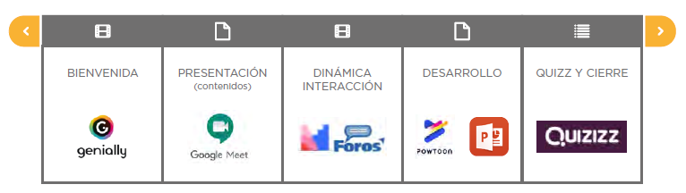

Además, se deben tener en cuenta las tecnologías o recursos digitales que van a utilizarse en cada etapa de la secuencia de la sesión de aprendizaje, así como las actividades asociadas a ella y los canales de comunicación que se establecerán con los estudiantes.
La elección de las tecnologías dependerá del objetivo pedagógico de cada sesión.

Figura. Secuencia de enseñanza de aprendizaje virtual.
Fuente. Guía 3: Desarrollo de competencias. (Minedu,2021)